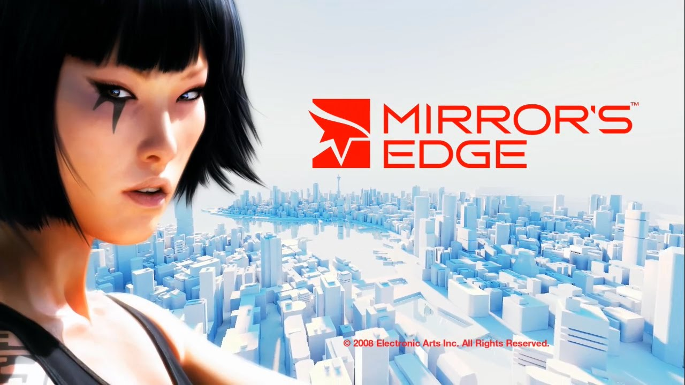

Mirror's Edge
This game, released in 2008 by DICE, is an exhilarating action-adventure game known for its unique first-person perspective and parkour-inspired platforming. Set in a futuristic cityscape, players navigate the urban environment as Faith, a skilled runner, overcoming obstacles and engaging in intense chase sequences. With a Metacritic score of 81, Mirror's Edge combines fluid movement, striking visuals, and a gripping storyline for an immersive gaming experience.

| SCORE | CRITIC | REVIEW | PLATFORM |
|---|---|---|---|
| 91 | 3DJuegos | Mirror's Edge is a videogame that definitely deserves a try, also on Pc. Its short length is the only complaint we can mention the campaign, because it's an incredible innovative title with a very powerful graphical side and an addictive gameplay proposal. A nice launching for this new saga that replaces the word 'brief' with the word 'intensity'. | PC |
| 91 | Pelit (Finland) | Mirror’s Edge works like a charm with keyboard and mouse, too. Parkour above a shining beautiful city is a nice change of pace after normal shooters. Hopefully we get to see more games like this in the future. [Jan 2009] | PC |
| 95 | Official Xbox Magazine | Aside from everything else Mirror’s Edge succeeds at, it also has some of the most arresting, original visuals we’ve seen on 360. Its starkly colorful graphics and slick anime cinematics are expressly designed to wire directly into your nerd-joy cortex — and they do. | XBOX 360 |
| 91 | 1UP | As a game steeped in immediacy, Mirror's Edge is an absolute must-play despite its idiosyncrasies. And as a pied piper for progressive design in first-person gaming, it's all the more important. | XBOX 360 |
| 91 | The A.V. Club | The story and dialogue are clunky at times. And there are many situations where you'll be utterly perplexed as to where to go next. But overall, no game this year looks, or plays, quite like this one. | XBOX 360 |
| 90 | VideoGamer | Combine a thoroughly entertaining single-player campaign with a stunning and challenging time trial mode, and you'll soon forget that you managed to run through the story in six hours or less. There's depth here that you'll only discover hours into time trialling a single stage, and as we said, no other game released this year comes close to being as cool. | XBOX 360 |
| 90 | Meristation | We put on our trainers in order to start running through the skyscrapers of an enormous city. Mirror's Edge is a unique platforming game, very realistic, with a very special point of view in the genre. A huge experience, very different from what we have played previously, with incredible gameplay and great atmosphere. | XBOX 360 |
| 90 | Playstation Official Magazine UK | You've never played anything like Mirror's Edge. It's a genuine original. When it's good - like when you're soaring between two rooftop cranes, pigeons scattering and traffic thrumming below, or dashing between roaming sniper laser sights, breaking into an enormous needle-shaped skyscraper - it's a total rush. | PLAYSTATION3 |
| 90 | Computer and Video Games | Not your average gaming experience - Mirror's Edge takes the FPS format and flips it on its head. A brilliant and unique experience, even if the small shooting parts aren't quite up to scratch. | PLAYSTATION3 |
| 90 | NZGamer | The story flows too, as Faith unravels her mystery. Between the chapters, which are all go, are artfully animated cut-scenes, which explain what’s going on. | PLAYSTATION3 |